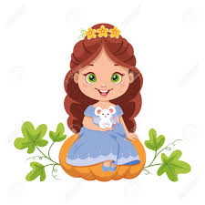
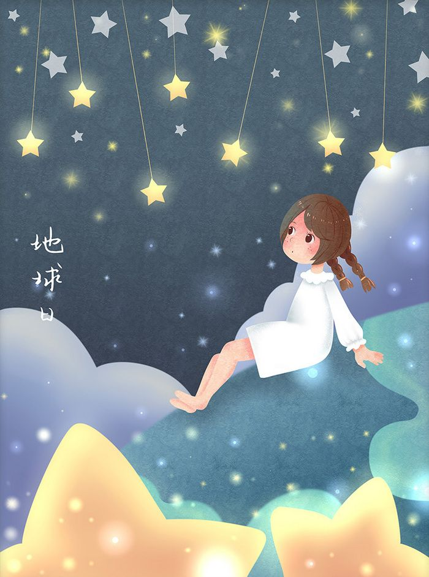
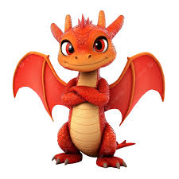

Érase una vez una princesa llamada Meredy, ella tenía un ratón como mascota. Ella era hija única, todos pensaríamos que está llena de atención de sus padres, los reyes del pueblo.
Pero la realidad era otra. Meredy pasaba la mayor parte del tiempo sola en el enorme castillo, y su ratón era su único amigo...
A pesar de la soledad, Meredy tenía una imaginación increíble. Cada rincón del castillo era para ella un escenario mágico: las escaleras eran montañas, los jardines eran bosques encantados, y el gran salón... su campo de batalla contra dragones invisibles.
Una noche, mientras observaba las estrellas desde la torre más alta, escuchó un rugido lejano. Al principio pensó que era el viento, pero su pequeño ratón —al que llamaba Niko— se escondió de inmediato. Meredy comprendió que no estaba imaginando nada.
Al día siguiente, los rumores se confirmaron: un dragón había sido visto cerca del bosque negro. Nadie se atrevía a salir del pueblo. Pero Meredy, lejos de tener miedo, sintió una chispa de emoción. Por primera vez, el mundo real parecía tan fantástico como los cuentos que ella se inventaba.
Con una capa vieja de su padre, una linterna, y a Niko escondido en su bolsillo, se escabulló del castillo al amanecer. No sabía exactamente qué haría si encontraba al dragón... pero sentía que debía descubrir qué significaba ese rugido.
